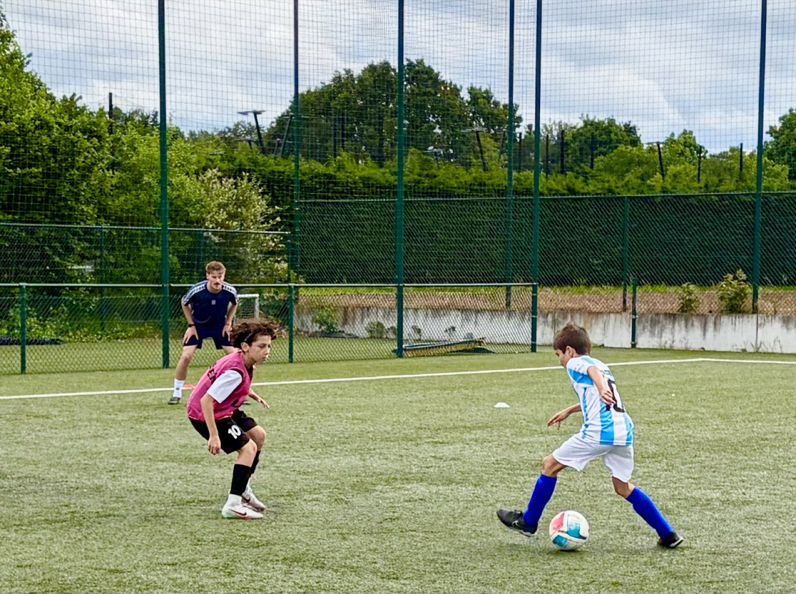

Coaches
De kwaliteit van een training staat of valt met wie er op het veld staat. Daarom werken we uitsluitend met UEFA-gediplomeerde coaches die actief zijn of waren op Elite niveau. Onder hen voormalige jeugdinternationals en spelers uit het hoogste amateurvoetbal — mensen die uit eigen ervaring weten wat er nodig is om stappen te zetten.
Wat hen bovenal onderscheidt, is hun pedagogische bagage. Verschillende coaches zijn leerkracht van opleiding of geven zelf trainersopleidingen. Ze weten hoe je jongeren iets aanleert, hoe je een groep begeleidt, en hoe je rekening houdt met wat een speler op dat moment aankan. Een goede oefening bedenken is één ding; ze op het juiste moment en op de juiste manier brengen is iets anders.

Hoe we werken
We houden de groepen bewust klein: 4 tot 6 spelers per coach bij de IDP Sessions, 6 tot 12 bij de Talent Sessions en de 7AM Club. Zo blijft er ruimte om elke speler individueel te zien, bij te sturen en aan te spreken — iets wat in een volledige clubtraining zelden lukt.
Onze coaches werken volgens één gedeelde methodologie: aandacht voor het principe van tijd, ruimte en timing, een sterke focus op techniek, veeleisend zijn op de kwaliteit van uitvoering, en detailcoaching in plaats van algemene aanwijzingen. Daarnaast krijgen spelers uitdagende oefenvormen die hen dwingen keuzes te maken onder druk.
Even belangrijk is de toon op het veld. We verwachten inzet en concentratie, maar spelers moeten fouten durven maken. Een speler die bang is om de bal te verliezen, leert niets bij.
Jelle Van Camp
- UEFA A
- Elite 1 (ex-STVV)
- Academy Manager
- Internationale ervaring (UK, Saudi-Arabië, ...)
Ward Schellens
- UEFA A
- Trainer Topsportschool Leuven
- Leerkracht LO
- Docent Voetbal Vlaanderen
- Elite 1 (ex-KVM & Club Brugge)
Maarten Tresegnie
- UEFA B
- Performance Coach RSC Anderlecht
- Leerkracht LO
- Voormalig jeugdinternational
- Speler 2de Amateur
Stijn Cloodts
- UEFA B
- GK Coach RSC Anderlecht
- Voormalig jeugdinternational
- Speler 2de Amateur
Jeremy De Strooper
- UEFA A
- Coach KRC Genk U13
Peter Sleven
- UEFA A
- Techniektrainer Wijgmaal
- Leerkracht LO
- Ex-speler Racing Mechelen
Lennert De Smet
- UEFA B
- Jeugdtrainer Racing Mechelen
- Leerkracht in opleiding
- Ex-jeugdspeler Racing Mechelen
Jelle Van Camp staat in voor het merendeel van de trainingen. Waar nodig kunnen andere coaches uit het team, afhankelijk van hun beschikbaarheid, occasioneel inspringen om bijkomende groepen te trainen of Jelle te vervangen.
Train mee met dit team
Alle sessies worden begeleid door de coaches hierboven, in groepen van 4 tot 12 spelers. Bekijk de kalender of registreer je speler via My Rise.